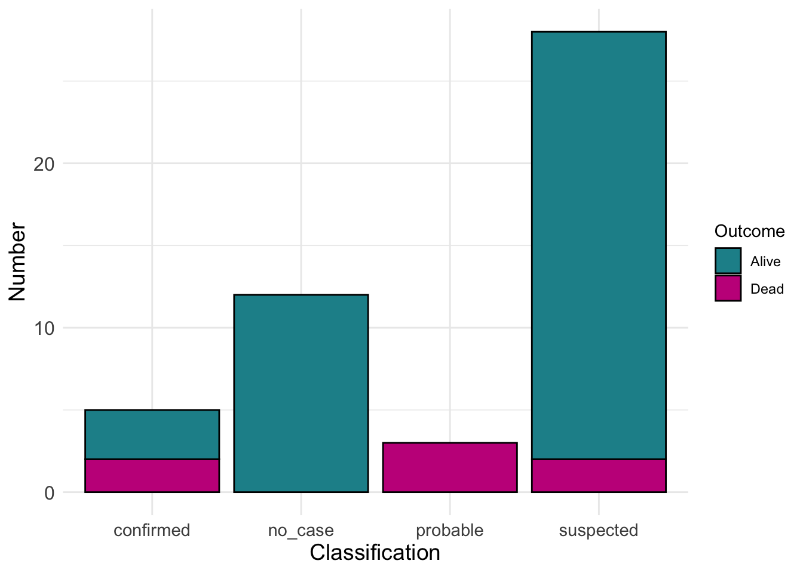
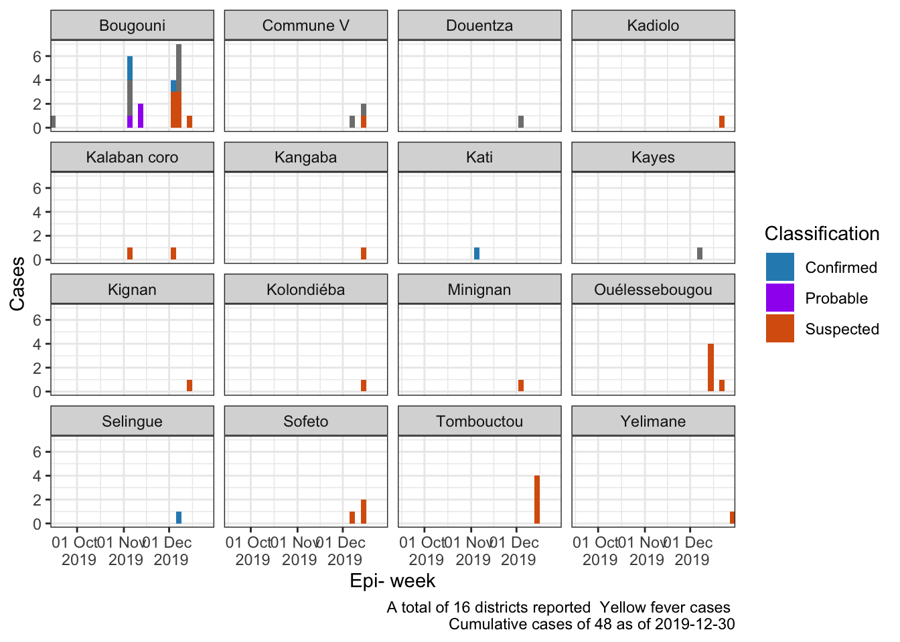
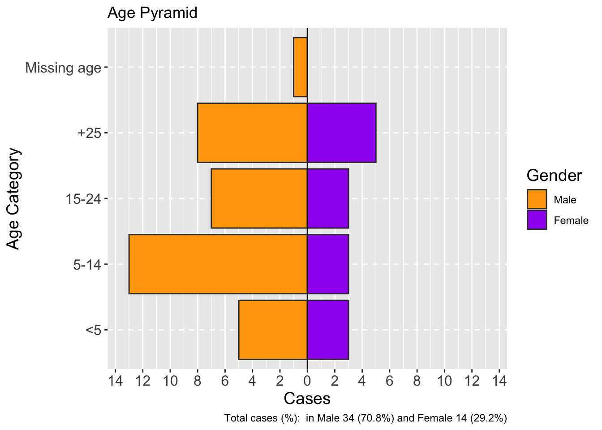

# This chunk loads packages
pacman::p_load(
rio, # for importing data
here, # for locating files
skimr, # for reviewing the data
janitor, # for data cleaning
epikit, # creating age categories
gtsummary, # creating tables
RColorBrewer, # for colour palettes
viridis, # for more colour palettes
scales, # percents in tables
flextable, # for making pretty tables
gghighlight, # highlighting plot parts
ggExtra, # special plotting functions
matchmaker, # dictionary-based cleaning
tsibble, # for epiweek
forcats, # Missing values
scales, # works with date
apyramid, # age pyramid
rstatix, # summary statistic
ggExtra, # special plotting functions
tidyverse # for data management and visualization
)Automated Surveillance Report using R Quarto
R
Visualization
ggplot2
Summary Table
This is an example of how to create a automated report using R Quarto with fake data.
Load Packages
We will load janitor for data cleaning, tidyverse for data management and visualization, epikit, apyramid, to import data, cleaning, create plot and table presentation.
Import dataset
This is a fake data of fever outbreak in Mali 2020.
# This chunck import the linelist of yellow fever
yellow_fever_raw <- import(here("data", "yelow_fever_ mali_09_01_2020.xlsx"))Code
skimr::skim(yellow_fever_raw)Data Cleaning
yellow_fever_clean <- yellow_fever_raw%>%
# automatically clean column name
janitor::clean_names() %>%
# manually clean column names to English
rename(
#new #old
n_order =num_ordre,
age_month = age_mois,
age_year = age_an,
gender = sexe,
health_area = aire_de_sante,
district_not = district_sanitaire_notifiant,
district_res = district_sanitaire_de_residence,
date_onset = date_de_consultation,
fever = fievre,
symptoms = symptomes,
date_death = date_de_deces,
classification = classification_finale,
outcome = evolution
) %>%
# de-duplicate rows
distinct()%>%
#convert date onset to date class
mutate(date_onset = ymd(date_onset)) %>%
# convert age (month and year) to numeric class
mutate(age_month = as.numeric(age_month),
age_year = as.numeric(age_year)) %>%
# convert "Unknown" gender to NA
mutate(gender = na_if(gender, "Unknown"))%>%
# create column epiweek
mutate(epiweek = floor_date(date_onset,
unit = "week",
week_start = 1
)) %>%
# properly record missing values in many character columns
mutate(across(.cols = where(is.character), .fns = ~na_if(.x, ""))) %>%
# re-code status columns
mutate(status = recode(status,
# for reference: OLD = NEW
"Confirmé" = "confirmed",
"Probable" = "probable",
"Suspect" = "suspected" ))%>%
# re-code outcome columns
mutate(outcome= recode(outcome,
# for reference: OLD = NEW
"Vivant" = "alive",
"Décédé" = "dead"))%>%
# re-code classification columns
mutate(classification = recode(classification,
# for reference: OLD = NEW
"Confirme" = "confirmed",
"Probable" = "probable",
"Non cas" = "no_case",
"Suspect" = "suspected"))%>%
# re-code some names in symptoms columns
mutate(symptoms = recode(symptoms,
# for reference: OLD = NEW
"Fièvre, ictère," = "Fièvre, ictère",
"Fievre plus ictere" = "Fièvre, ictère",
"Icteère, fièvre, vomissement" = "Ictère, fivre, Vomissement",
"fièvre, ictère, vomissement" = "Ictère, fivre, Vomissement",
"Fièvre,Fièvre, Vomissemnt" = "Fièvre, Vomissemnt")) %>%
# create column age_years
mutate(age_years = case_when(
age_year != is.na(age_year) ~ age_year, # if column is age_year keep age_year
age_month != is.na(age_month) ~ age_month/12, # if column age_month is month divide by 12
.default = NULL # if age_year missing assume age_years, else NA
)) %>%
# transform to numeric
mutate(age_years = as.numeric(age_years)) %>%
# age_class column
mutate(age_class = ifelse(age_years >=18, "adult", "child")) %>%
# create age categories column
mutate (age_cat = cut(
age_years,
breaks = c( 0 , 5, 15, 25, 100),
right = FALSE,
include.lowest = TRUE,
labels = c("<5", "5-14", "15-24", "+25")),
age_cat = fct_explicit_na(
age_cat,
na_level = "Missing age"
)) %>%
# check similar column in district_res and district_dect
mutate(moved = district_res != district_not)%>%
# create new column named district to fill-in missing values
mutate(district = coalesce(district_not, district_res)) %>%
# re-code districts columns
mutate(district = recode(district,
# for reference: OLD = NEW
"Ouelessebougou" = "Ouélessebougou",
"Sefeto" = "Sofeto"))%>%
# select column in study
select(n_order, starts_with("district"), date_onset, epiweek, age_cat, age_years, gender, status, classification, outcome, everything())Highlights for Introduction
- 48 Number of new cases reported during the epi-week 2019-12-30 - N°4 including 5 confirmed cases and 7 deaths.
- 48 Cumulative number of cases since the beginning of the outbreaks including 5 confirmed cases, 3 probable cases and 40 suspected cases.
- 7 Cumulative number of deaths, providing a case fatality rate of 15%.
This is the code inline that create the Highlights.
#- `r nrow(yellow_fever_clean)` Number of new cases reported during the epi-week [ **`r max(yellow_fever_clean$epiweek)` - N°4**]{style="color: green;"} including `r sum(yellow_fever_clean$status == "confirmed", na.rm = T)` confirmed cases and `r sum(yellow_fever_clean$outcome == "dead", na.rm = T)` deaths.
#- `r nrow(yellow_fever_clean)` *Cumulative number of cases since the beginning of the outbreaks including* `r sum(yellow_fever_clean$status == "confirmed", na.rm = T)` confirmed cases, `r sum(yellow_fever_clean$status == "probable", na.rm = T)` probable cases and `r sum(yellow_fever_clean$status == "suspected", na.rm = T)` suspected cases.
#- `r sum(yellow_fever_clean$outcome == "dead", na.rm = T)` *Cumulative number of deaths*, providing a case fatality rate of `r round(sum(yellow_fever_clean$outcome == "dead", na.rm = T)/nrow(yellow_fever_clean)*100, digits=0)`%.Summary Table
border_style = officer::fp_border(color="black", width=1)
# Table summarizing the number of cases (confirmed, probable, and suspected) by District sanitaire: Cumulative and last epi-week
yellow_fever_clean %>%
group_by(district) %>%
summarise(
cum_cases = n(),
case_1wk = sum(cum_cases[epiweek > max(epiweek)-7], na.rm = TRUE),
suspected = sum(status == "suspected", na.rm = T),
confirmed = sum(status == "confirmed", na.rm = T),
probable = sum(status == "probable", na.rm = T)) %>%
filter(cum_cases >1) %>%
adorn_totals(where = "col") %>%
adorn_percentages("col") %>%
adorn_pct_formatting() %>%
adorn_ns(position = "front") %>%
qflextable() %>%
set_header_labels(
district = "District",
cum_cases = "Cumulative Cases",
case_1wk = "Cases - Last Week",
suspected = "Supected cases ",
confirmed = "Confirmed cases ",
probable = "Probable cases "
) %>%
vline(part = "all", j = c(1:5), border = border_style)%>%
bg(part = "body", bg = "gray95") %>%
bg(., i= ~ district == "Bougouni", part = "body", bg = "#91c293")District | Cumulative Cases | Cases - Last Week | Supected cases | Confirmed cases | Probable cases | Total |
|---|---|---|---|---|---|---|
Bougouni | 21 (55.3%) | 0 (0.0%) | 15 (46.9%) | 3 (100.0%) | 3 (100.0%) | 42 (48.8%) |
Commune V | 3 (7.9%) | 3 (30.0%) | 3 (9.4%) | 0 (0.0%) | 0 (0.0%) | 9 (10.5%) |
Kalaban coro | 2 (5.3%) | 0 (0.0%) | 2 (6.2%) | 0 (0.0%) | 0 (0.0%) | 4 (4.7%) |
Ouélessebougou | 5 (13.2%) | 0 (0.0%) | 5 (15.6%) | 0 (0.0%) | 0 (0.0%) | 10 (11.6%) |
Sofeto | 3 (7.9%) | 3 (30.0%) | 3 (9.4%) | 0 (0.0%) | 0 (0.0%) | 9 (10.5%) |
Tombouctou | 4 (10.5%) | 4 (40.0%) | 4 (12.5%) | 0 (0.0%) | 0 (0.0%) | 12 (14.0%) |
Cases by classification by outcome
Plot the Distribution of cases by classification and by outcome using geom_bar() function.
ggplot(data = yellow_fever_clean,
mapping = aes(x = classification,
fill=outcome)) +
geom_bar( col = "black") +
theme_minimal() +
scale_fill_manual(values = c("alive" = "#1c9099",
"dead" = "#c51b8a"),
labels = c("alive" = "Alive",
"dead" = "Dead") )+
labs(
x = "Classification",
y = "Number",
fill = "Outcome"
) +
theme(
axis.title = element_text(size = 14),
axis.text.x = element_text(size = 11),
axis.text.y = element_text(size = 12)
)
Epicurve of symptoms and classification
Plot a epicurve showing distribution of cases by week of symptoms onset and classification.
ggplot(data = yellow_fever_clean,
mapping = aes(x = epiweek)) +
geom_histogram(aes(fill = classification)) +
scale_x_date(date_breaks = "1 month",
date_labels = "%d %b \n %Y",
expand = c(0,0)) +
scale_fill_manual(
values = c( "confirmed" = "#2b8cbe",
"probable" = "purple",
"suspected" = "#d95f0e"),
labels = c("confirmed" = "Confirmed",
"probable"= "Probable",
"suspected" = "Suspected"),
name = "Classification") +
facet_wrap(~district) +
theme_bw() +
labs( x = "Epi- week",
y = "Cases",
fill = "Classification",
caption = str_glue("A total of {n_distinct(yellow_fever_clean$district)} districts reported Yellow fever cases \nCumulative cases of {nrow(yellow_fever_clean)} as of {max(yellow_fever_clean$epiweek)}"))
Age Pyramid
Plot the distribution of cases by age group and gender using apyramid function.
apyramid::age_pyramid(data = yellow_fever_clean,
age_group = age_cat,
split_by = gender,
show_midpoint = FALSE) +
scale_fill_manual(values = c("M" = "orange",
"F" = "purple"),
labels = c("M" = "Male",
"F" = "Female"),
na.value = "grey")+
labs(title = "Age Pyramid",
y = "Cases",
x = "Age Category",
fill = "Gender",
caption = str_glue("Total cases (%): in Male {fmt_count(yellow_fever_clean, gender == 'M')} and Female {fmt_count(yellow_fever_clean, gender == 'F')}")) +
theme(
axis.title = element_text(size = 14),
axis.text = element_text(size = 12),
legend.title = element_text(size = 14)
)
No matching items